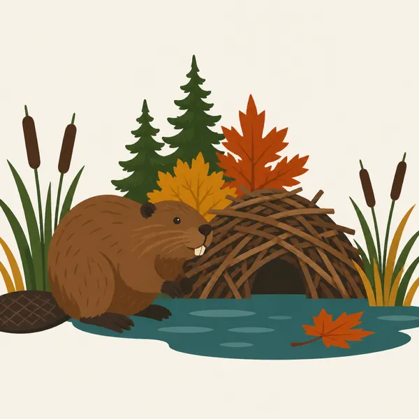
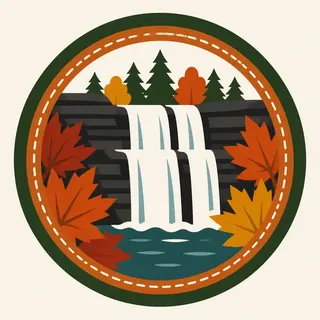

01
The crooked river
Native people called it Ka-ih-ogh-ha, crooked river, for the U-shaped path toward Lake Erie. The kids' page gives that name and the 26 miles inside the park. The header follows the bend.
TrailMark Archive Edition
Ohio | Cuyahoga River
Authorized as a national recreation area in 1974. Renamed a national park on October 11, 2000.
Archive No. TM-CUVA-034
National Park since 2000
Collection Crooked River
Park Overview
On December 27, 1974, President Ford authorized Cuyahoga Valley as a national recreation area. It was officially designated on June 26, 1975, and renamed a national park on October 11, 2000.
The history page places that law in a decade when Northeast Ohio was fighting suburban development, and when a 1969 fire on the Cuyahoga River, just north of the park, had become a national symbol for polluted water. The Nixon administration was pushing federal parks near cities. This one was one of them.
The kids' park-basics page says the valley includes more than fifty square miles, 26 miles of the river, and 13,000 years of people. A press kit puts the size at about 33,000 acres, and more precisely about 32,950, between Cleveland and Akron. This essay keeps both figures.
Emotional Thesis
The header is a waterfall, a boardwalk, autumn trees, and a train in the gorge. The kids' page lists the same kind of mix: forest, gorges, wetlands, waterfalls, villages, a canal towpath, farm fields, a covered bridge, and a sightseeing railroad.
None of that is empty wilderness. The press kit says roughly 19,113 acres are federal and about 13,837 are not. A national park here is a stitched valley, not a single deed.
Landscape Highlights
01
Native people called it Ka-ih-ogh-ha, crooked river, for the U-shaped path toward Lake Erie. The kids' page gives that name and the 26 miles inside the park. The header follows the bend.
02
The Ohio & Erie Canal is the historic line through the valley. The park homepage sends visitors to the Towpath Trail to walk that route. A train in the painting is the other old corridor, the Valley Railway, which the press kit names as nationally significant.
03
The kids' page says the park has rocky waterfalls. The painting puts one on the right. This essay does not assign that painted drop a proper name.
Wildlife
The park homepage calls Cuyahoga Valley a refuge for native plants and wildlife between Cleveland and Akron. This essay does not add a species count the opened pages did not give.

01
The extra drawing is a beaver at a stick lodge among cattails. It is an illustration of the wetlands the kids' page names, not a census.
02
The river's recovery is the management story. A strategic plan on the park site set its sights on the river leaving an environmental Area of Concern. Current water quality is an NPS question.
03
Farms and forests share the valley. Wildlife here lives next to roads. That is the point of an urban park, and it is also the risk.
Geology
The kids' page describes thick forest, deep gorges, and rocky waterfalls around a river headed for Lake Erie. A fuller bedrock chapter was not on the pages used here.
01
The U-shaped course is the name. The gorge in the header is one cut along that course.
02
Wetlands sit with the river. The beaver lodge is the drawing's version of that wet ground.
03
No gorge depth is printed on the pages this essay uses, so none is added.
The header is an autumn valley. Maple color is the painting. Peak weeks and trail crowds are on the park calendar.
The homepage points visitors to winter sports. What is groomed changes with the snow. Read the current page.
A 2025 homepage note said more than 125 miles of hiking trails. Treat that as a snapshot from that page, and confirm the map before you go.
Farm fields are part of the kids' page description. This is not a park that empties when the leaves drop.
Photography
A pretty gorge with no canal, no farm, and no railroad is missing why Congress stepped in.
01
Include a bend of river. The name is the shape.
02
The painted waterfall is a type. Use a real name only when you are at the signed drop.
03
Much of the valley is not federal. A farm in the frame may be someone's work. Stay on the public trail.
Field Notes
They did not set aside an empty valley. They set aside one that two cities were about to use up.
TrailMark Field Notes

Badge Story
The mark should read as a used valley: water, a path, and hardwoods. A blank wilderness circle would be the wrong Ohio.
Crooked river and a gorge.
A train or a covered bridge can stand for the human layer the kids' page lists.
Do not borrow a western canyon palette. These walls are shale and trees.
Archive No.034
LocationCuyahoga River
ReleaseValley Mark
Stewardship / Safety
The mission language, pulled from the 1974 law, is to protect the historic, scenic, natural, and recreational values of the valley and to keep open space for the cities. Rules for today are on NPS.
The 1969 fire is history. Do not treat the river as either ruined or finished. Current conditions are posted by the park.
About 250 historic structures are in the boundary. They are not props.
Non-federal land is part of the map. Stay on marked public routes.
The beaver drawing is not a feeding invitation. Wetland animals set the distance.
Current conditions, fees, and alerts are on the National Park Service site.
Continue the Archive
This page is the crooked river between Cleveland and Akron. Congaree is the southern floodplain already published. Gateway Arch, in this batch, is the city monument.